示例：使用 BACnet 参考值上的外部气温
该示例包括 2 个设备，每个设备有 2 个加热电路。创建控制程序时，从库中取出 4 个加热电路，每个加热电路都预编程了一个外部温度传感器。由于外墙上只有 1 个物理温度传感器，因此必须通过 BACnet 参考对象将 3 个加热电路链接到物理外部空气温度对象。
由于相应的工程在 ABT 站点以及现场程序编辑器中进行，因此必须遵守示例的顺序。
例子：
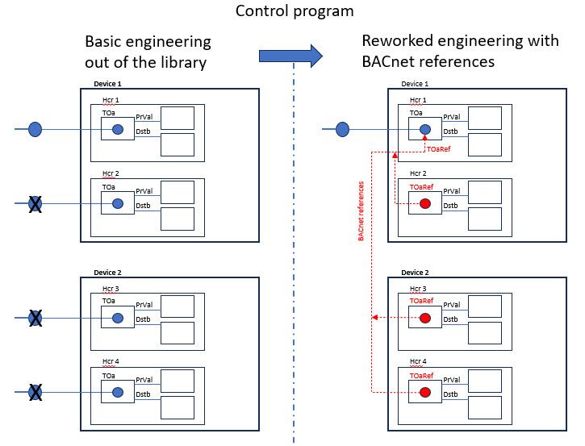
1. Naming settings for I/O replacement
为了实现对象的自动替换，必须首先检查设置，或者在必要时更改设置。
- Go to Settings.
- Open the Naming defaults task.
- Select the Plant automation tab.
- In the Naming settings for I/O replacement section:
- From the Use I/O description of drop-down list, select Target (drop destination).
- From the Use I/O name drop-down list, select Target (drop destination).
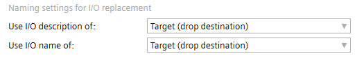
2. Creating devices
- Go to Building > Building structure.
- Define the first device.
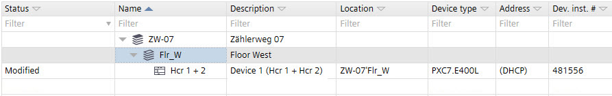
3. Creating heating circuits 1 and 2 in the programming editor for device 1
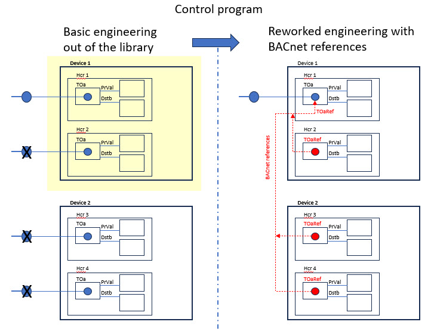
- In the building hierarchy, select device 1.
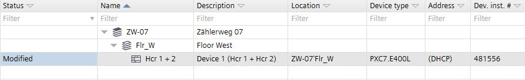
- Right-click and select Go to programming.
- The Programming editor opens.
- Select the Library tab.
- Select a plant from Plants > Nested, for example, Hcr22x Heating circuit.
- Drag the selected plant into + Add plant in the Project tree.
- Rename the properties of the Heating circuit 1:
a. Select the BACnet properties tab or right-click and select Properties..
b. Select the Naming tab.
c. In the Name field, replace the default name with a unique Name extension.
d. In the Description field, replace the default name with a unique description.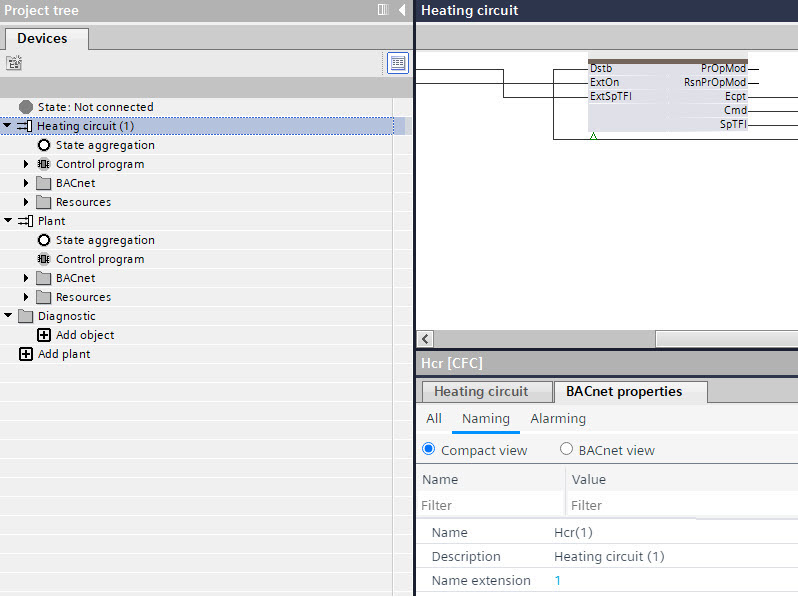
- Repeat the steps 4 to 6 for heating circuit 2 or use the Duplicate function.
- In the Project tree, delete the default Plant.
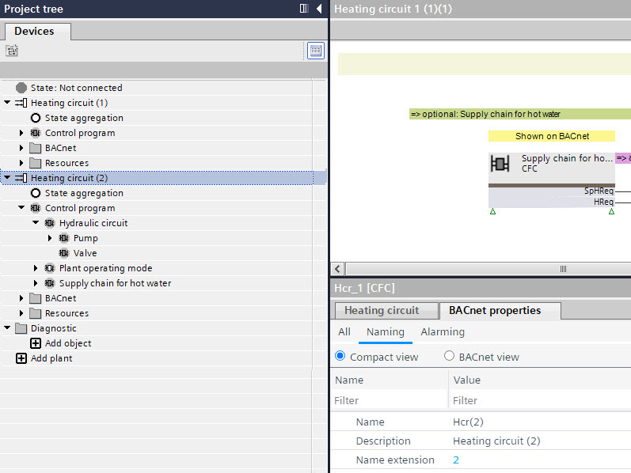
- The heating circuits 1 and 2 in the device 1 are created.
4. Creating heating circuits 3 and 4 in the programming editor for device 2
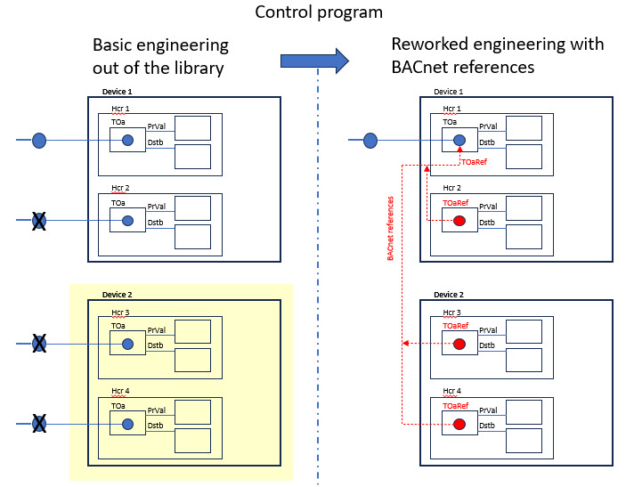
- In ABT Site, go to Building > Building structure.
- In the building hierarchy, select device 1.
- Right-click and select Duplicate.
- The Add devices dialog box opens.
- Rename the Device name and the Device description name.
- Click OK.
- The device 2 with heating circuit 3 and 4 is created.
- Select the device 2 with heating circuit 3 and 4.
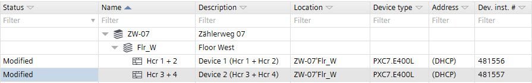
- Right-click and select Go to programming.
- The Programming editor opens.
- In the Project tree, right-click the Heating circuit 1 and select Properties.
- The Properties dialog box opens.
- Rename the properties of the Heating circuit 1 to 3:
a. Right-click and select Properties.
b. In the Name field, replace the default name with a unique Name extension.
c. In the Description field, replace the default name with a unique description. - Rename the properties of the Heating circuit 2 to 4.
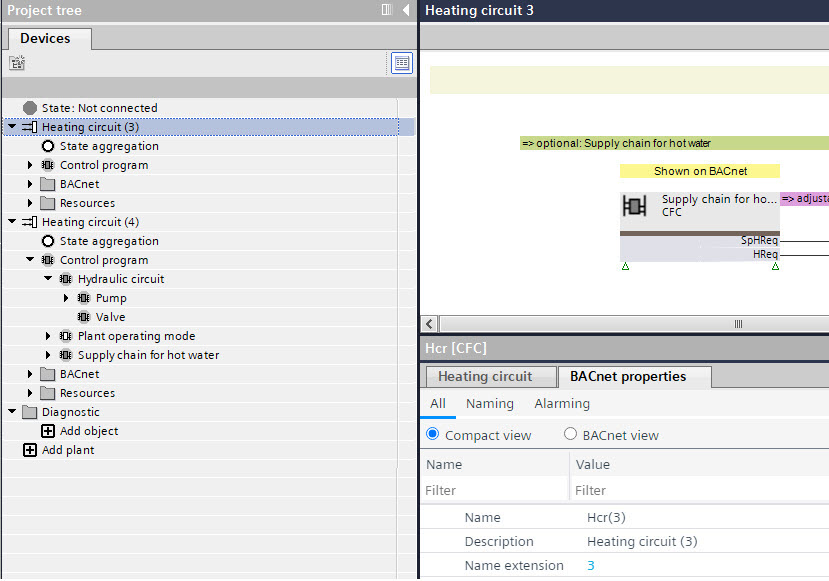
- The heating circuits 3 and 4 in the device 2 are created.

完成4个加热回路的控制程序后，就创建了4个室外空气温度传感器。由于建筑物只有 1 个物理室外温度传感器，因此必须用对该物理传感器的 BACnet 引用替换 3 个创建的传感器。
5. Creating a BACnet reference for heating circuit 2 in device 1
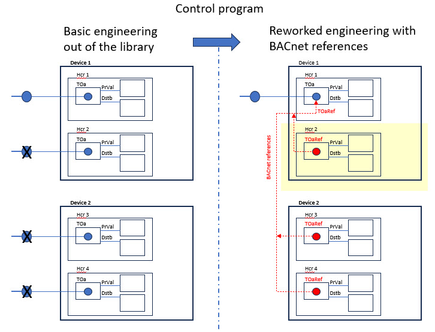
- In ABT Site, go to Building > Building structure.
- In the building hierarchy, select device 1.
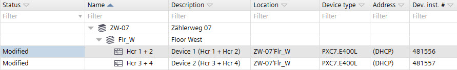
- Right-click and select Go to engineering.
- Open the BACnet references task.
- Select the Projects tab.
- In the Projects area, expand the building hierarchy.
- Select the device 1 with Hcr 1 + 2.
- Filter for the outside air temperature data points:
- In the column Name, enter TOa.
- In the column Object enter AI.
- The data points for the outside air temperature of heating circuits 1 and 2 are displayed.
- Drag the data point from heating circuit 1 to the Plants navigation view of heating circuit 2, this will create a new BACnet reference in Heating circuit (2), referencing the outside air temperature of Heating circuit (1).
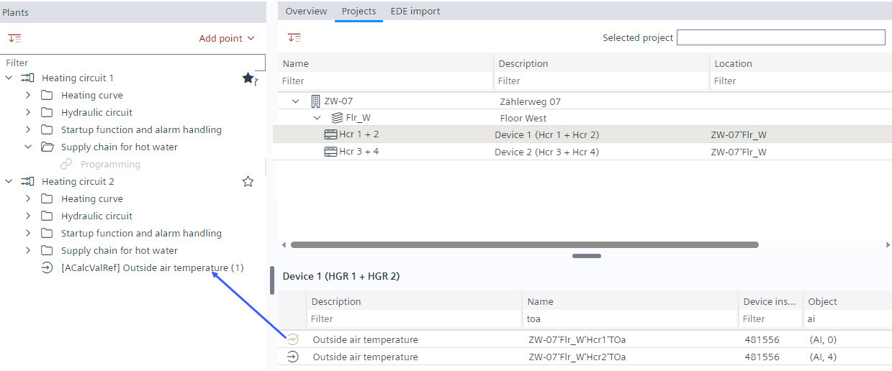
6. Creating a BACnet reference for heating circuit 3 and 4 in device 2
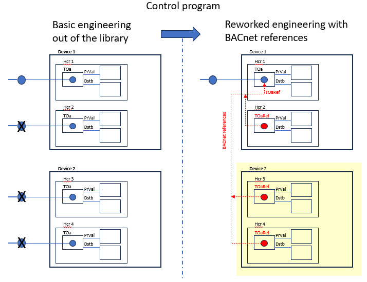
- In ABT Site, go to Building > Building structure.
- In the building hierarchy, select device 2.
- Right-click and select Go to engineering.
- Open the BACnet references task.
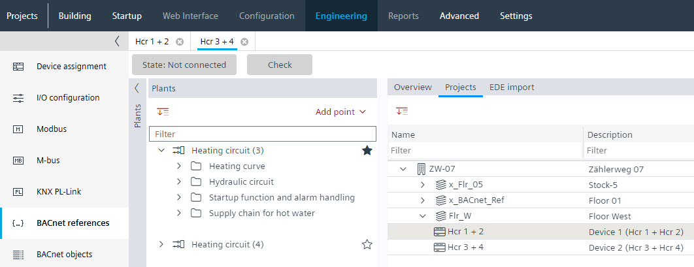
- Select the Hcr 3 + 4 tab.
- Select the Projects tab.
- In the Projects area, expand the building hierarchy.
- Select the device 1 with Hcr 1 + 2.
- Filter for the outside air temperature data points:
- In the column Name, enter TOa.
- In the column Object enter AI.
- The data points for the outside air temperature of heating circuits 1 and 2 are displayed.
- Drag the data point from heating circuit 1 to the Plants navigation view of heating circuit 3, this will create a new BACnet reference in Heating circuit (3), referencing the outside air temperature of Heating circuit (1).
- Drag the data point from heating circuit 1 to the Plants navigation view of heating circuit 4, this will create a new BACnet reference in Heating circuit (4), referencing the outside air temperature of Heating circuit (1).
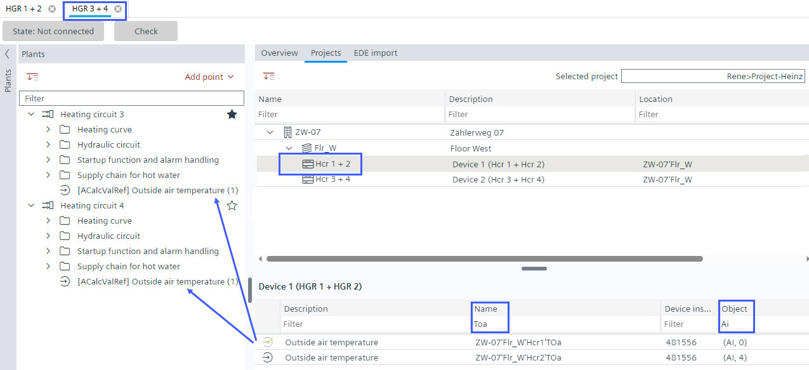
7. Replacing the default I/O data point in the control program with the BACnet reference of device 1
- In the building hierarchy, select device 1.
- Right-click and select Go to programming.
- The Programming editor opens.
- In the Project tree, expand the BACnet folder of heating circuit 2.
- In heating circuit 2, drag the data point [ACalcValRef] Outside air temperature (1) over the data point [AI] Outside air temperature.
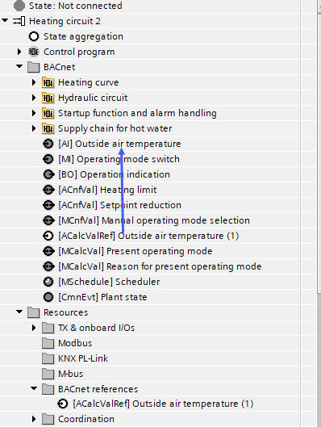
- The I/O replacement dialog box opens.
- All block names with a data point TOa are listed.
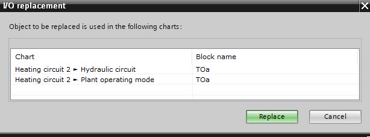
- Click Replace.
Note: Selecting a data point is not necessary, the functionality replaces all listed data points. - The data point [AI] Outside air temperature is replaced with the data point [ACalcValRef] Outside air temperature (1) (and the name is adjusted to Outside air temperature, without the extension (1)).
- The data point [ACalcValRef] Outside air temperature (1) is marked as assigned to the control program.
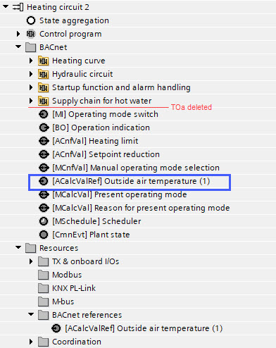
- The default data point information in the control program are replaced with the BACnet reference.
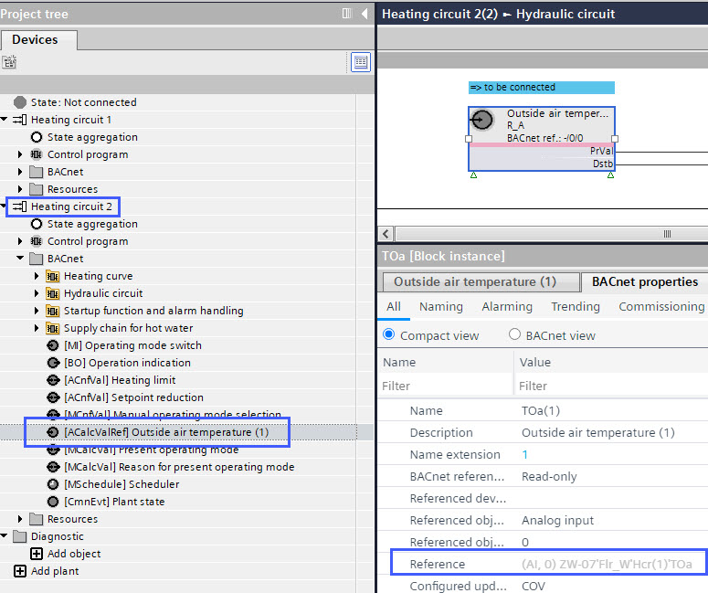
- The data point Outside air temperature from heating circuit 2 is deleted in the BACnet folder as in the TX & onboard I/Os folder.
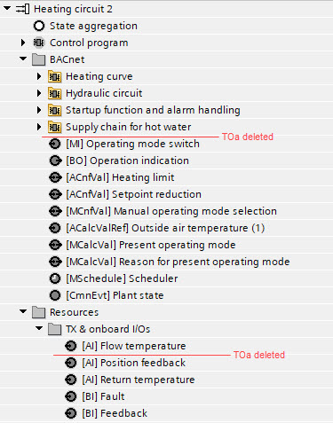
- The data point Outside air temperature from heating circuit 2 is deleted from the Projects area of ABT Site as well.
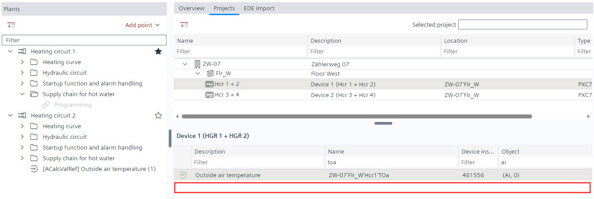
8. Replacing the default I/O data point in the control program with BACnet reference of device 2
- In the building hierarchy, select device 2.
- Right-click and select Go to programming.
- The Programming editor opens.
- In the Project tree, expand the BACnet folder of heating circuit 3.
- In heating circuit 3, drag the data point [ACalcValRef] Outside air temperature (1) over the data point [AI] Outside air temperature.
(picture see heating circuit 2) - The I/O replacement dialog box opens.
- All block names with a data point TOa are listed.
- Click Replace.
Note: Selecting a data point is not necessary, the functionality replaces all listed data points. - The data point [AI] Outside air temperature is replaced with the data point [ACalcValRef] Outside air temperature (1).
- The data point [ACalcValRef] Outside air temperature (1) is marked as assigned to the control program.
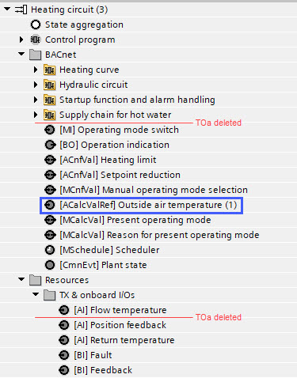
- The default data point information in the control program are replaced with the BACnet reference.
- The data point Outside air temperature from heating circuit 3 is deleted in the BACnet folder as in the TX & onboard I/Os folder.
- In the Project tree, expand the BACnet folder of heating circuit 4.
- In heating circuit 4, drag the data point [ACalcValRef] Outside air temperature (1) over the data point [AI] Outside air temperature.
(picture see heating circuit 2) - The I/O replacement dialog box opens.
- All block names with a data point TOa are listed.
- Click Replace.
Note: Selecting a data point is not necessary, the functionality replaces all listed data points. - The data point [AI] Outside air temperature is replaced with the data point [ACalcValRef] Outside air temperature (1).
- The data point [ACalcValRef] Outside air temperature (1) is marked as assigned to the control program.
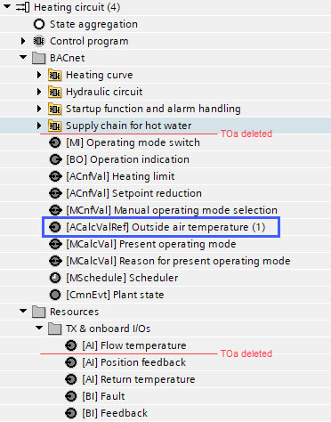
- The default data point information in the control program are replaced with the BACnet reference.
- The data point Outside air temperature from heating circuit 4 is deleted in the BACnet folder as in the TX & onboard I/Os folder.
- The data points Outside air temperature from heating circuit 3 and 4 are deleted from the Projects area of ABT Site.
Final result
显示 ABT 站点中的数据点情况（在BACnet references任务）和控制程序中。
Device 1 | Device 2 | ||
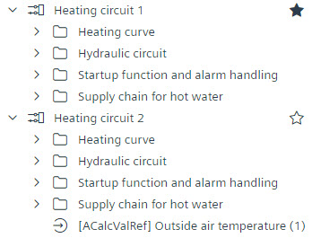 |
| 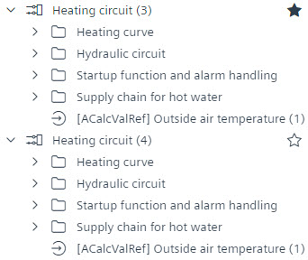 |
|
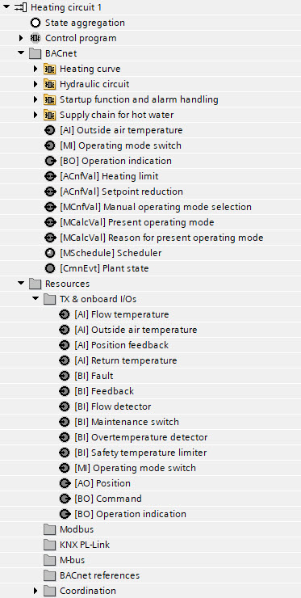 | 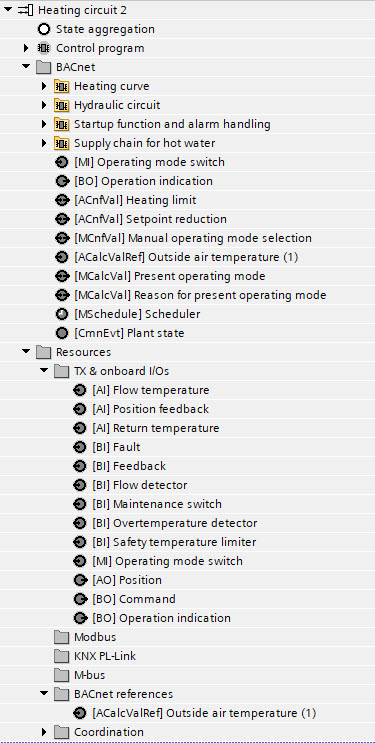 | 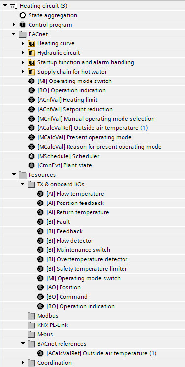 | 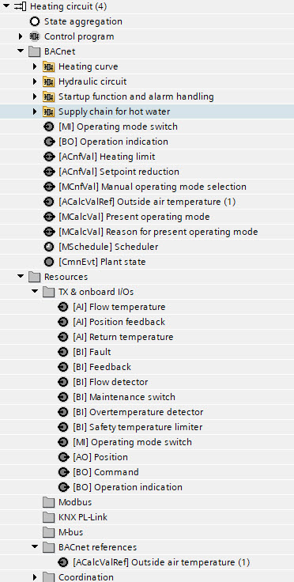 |